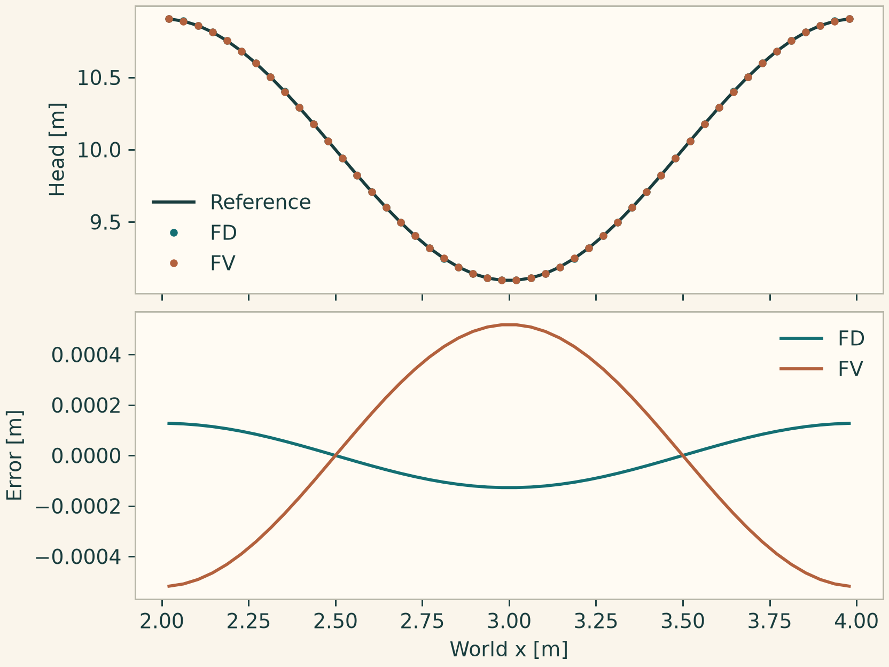

Docs › Guide
7 Numerical configuration and spatial operators
7.1 Discretization and validation
onesim.numerics.discretization
Pass the selected spatial declaration as Numerics(spatial=...). Attach a linear_solver for an assembled solve where required, nonlinear_solver for a residual iteration, linearized_solver for methods that solve a linearized stage, and time_integrator for transient studies. The Newton declaration can own its inner linear solver separately. step_limits provides method-independent restrictions. coupling holds numerical coupling within the selected binding, such as velocity–pressure correction. The multi-model Simulation(coupling_solver=...) selects a coupled study strategy. For heterogeneous models, pass mesh={model: mesh} and numerics={model: numerics} with all the participating models represented.
LumpedParameters represents global unknowns on LumpedMesh. Where a spatial declaration accepts initialization=, NodalInterpolation evaluates the initial data at nodes, CellAverageProjection computes physical cell means, and L2Projection performs a mass projection with selected quadrature. The representation influences an error comparison. For a finite-volume Fourier mode, compare the cell average of the reference, or compare a reconstructed solution at documented points. For higher-order FEM, compare via native evaluation or an integral norm.
NumericalIR states the problem requirements before execution. NumericalExecutionPlan records selected method and provider bindings. They are useful when checking how a variant was resolved. CapabilitySet, RequirementSet, MethodProviderOffer, and evaluate_method_provider are extension-level compatibility contracts. The evaluation function requires an actual supplied provider and context for confirmation. count(value, name, minimum=..., maximum=...) returns a validated built-in integer or raises ValueError. It rejects booleans and numeric types that are distinct from Python's int.
7.2 Finite differences
onesim.numerics.fdm
Use FiniteDifference for supported sample or conservative line carriers, and for specific volume bindings with a compatible operator. Set gradient= for first derivatives or flux differences and diffusion= for second derivatives. CentralDifference and CentralLaplacian are second-order uniform-grid choices. PolynomialDifference and PolynomialLaplacian expose accuracy order and nonuniform stencil support where implemented. SummationByPartsDifference supplies a derivative with a discrete integration-by-parts structure for supported boundary closures. If the transport law needs a boundary flux, BoundaryFluxDifference pairs the derivative with the boundary solver. WENOFluxDifference uses GlobalLaxFriedrichsSplit and WENO5Flux for a supported nonlinear flux route. HydrostaticFluxDifference adds the shallow-water equilibrium and admissibility treatment. Verify the stencil's domain, spacing and boundary compatibility before asking for higher order.
7.3 Finite volumes and finite integration
onesim.numerics.fvm
Use FiniteVolume for conservation laws on control volumes. Choose a face flux, a reconstruction and, when needed, a limiter, a positivity policy and source quadrature. Rusanov uses a local wave-speed estimate and is a starting flux for many systems. MonotoneUpwind needs a compatible scalar monotone flux. LinearUpwind uses gradient information for convection in the volume heat example. CentralDifference in this module is the FV diffusion choice in that example. TwoPointDiffusion uses a two-point face approximation where the carrier supports it. LeastSquaresGradient and BoundaryLeastSquaresGradient reconstruct gradients with different boundary information. ScharfetterGummel is an exponentially fitted drift–diffusion flux. Use ImplicitLocalSources where the physical and time-stage source contracts support it.
MUSCL reconstructs face states from a piecewise-linear cell field. Select slope limiting separately. Minmod is restrictive, monotonized central and Van Leer retain more slope in smooth cells, and Superbee is more compressive. Barth–Jespersen constrains reconstructed values by neighbor extrema and Venkatakrishnan regularizes the limiter. TvbLimiter wraps a base limiter to preserve smooth curvature under a specified threshold. The ENO and WENO reconstructor classes choose stencils or nonlinear weights for their supported scalar carrier. ConvexInvariantDomain retracts traces toward the unchanged mean. HydrostaticReconstruction, WetDryActiveSet and WetDryTraceScaling address balance and admissibility around shallow-water dry fronts. Use a constant solution, a shock or front, and a conservation check before judging the method by a smooth plot.
For collocated flow, RhieChow supplies face interpolation and couples pressure to flux. The separate PISO or CoupledVelocityPressure strategy determines how to solve the pressure–velocity block. CentralElasticStress is an FV elasticity contribution. Electromagnetic FV uses MimeticCurl or FiniteIntegration with an explicit Hodge map. OrientedCellComplex handles edge and face incidence; WhitneyHodge provides metric maps through Whitney reconstruction and OrthogonalHodge targets supported orthogonal carriers. Use complex scalars for phasors. A curl operator on a compatible edge and face complex is distinct from a componentwise gradient.
7.4 Finite elements
onesim.numerics.fem
Choose FiniteElement(element=...) by continuity and by the quantity the method represents. Lagrange(order=p) uses continuous nodal P\(p\) on simplices or Q\(p\) on supported tensor-product hexahedra. DiscontinuousLagrange gives cell-local degrees of freedom. Supply DG flux and diffusion contributions as required by the equation. Nedelec gives tangentially conforming H(curl) fields. RaviartThomas and BrezziDouglasMarini give normal-conforming H(div) fluxes, paired with a discontinuous scalar in MixedDiffusionElement. The lowest public Raviart–Thomas order is zero and the lowest public Nedelec order is one.
Choose TaylorHood for a compatible mixed velocity–pressure problem. EqualOrderVelocityPressure requires an appropriate pressure stabilization such as PSPG in the supported formulation. GradDiv penalizes divergence. MixedMomentumContribution and MixedContinuityContribution allow explicit assembly contributions. For scalar or system transport, GalerkinAdvection and GalerkinDiffusion select Galerkin contributions. InterpolatedFluxDivergence uses an interpolated physical flux. SUPG, GLS, CIP and volume CIP are distinct stabilizations with coefficients and residual contracts. Check the units and scale of the supplied \(\tau\), penalty or diffusivity.
Nitsche and HcurlNitsche weakly impose the appropriate value or tangential trace. SymmetricInteriorPenalty is a DG diffusion contribution with an explicit penalty. DGJumpPenalty contributes interface dissipation. DGPolynomialLimiter, ScalarInterval, OrderedFields, InvariantDomainGraphViscosity and HydrostaticGraphViscosity enforce selected admissibility conditions in supported formulations. RowSumLumping is a mass approximation. ConsistentMassStability and DissipativeMassStability are stability-bound declarations and should be selected for their stated operator properties. ConstraintAugmentation augments a primal equation while retaining the constraint. Record which of these components the model actually binds and executes.
7.5 Change one numerical choice at a time
This example advances the same periodic groundwater problem with central FD and two-point FV diffusion. Both runs keep the geometry, source, initial field and time step fixed. The line uses a world coordinate along its axis and the initial condition is periodic over one full wavelength. The checks use native evaluation for visualization and cell centers for the reference. The FV error bound allows for the small difference between a cell mean and a point value on this mesh.
import numpy as np
import matplotlib.pyplot as plt
import onesimulation_plot_theme as theme
from onesim.cad.d1 import Line
from onesim.meshing import PeriodicPair, StructuredLineMesher
from onesim.numerics import Numerics
from onesim.numerics.fdm import CentralDifference, CentralLaplacian, FiniteDifference
from onesim.numerics.fvm import FiniteVolume, TwoPointDiffusion
from onesim.numerics.time import ClassicalRungeKutta4
from onesim.physics.geotechnics import GroundwaterFlow
from onesim.simulation import Problem, Simulation
from onesim.simulation.initial_conditions import InitialValue
from onesim.simulation.problem_definition.boundaries import PeriodicBoundary
geometry = Line(start=(2, 0, 0), end=(4, 0, 0))
water = GroundwaterFlow(domain=geometry.line, conductivity=0.1, specific_storage=1)
problem = Problem(
name="Periodic groundwater", geometry=geometry, physics=(water,),
initial_conditions=(InitialValue(water.head, lambda x: 10 + np.cos(np.pi*x)),),
boundary_conditions=(
PeriodicBoundary(
physics=water,
pair=PeriodicPair(geometry.boundaries.start, geometry.boundaries.end),
),
),
)
mesh = StructuredLineMesher(cells=48).generate(geometry)
choices = {
"FD": FiniteDifference(gradient=CentralDifference(), diffusion=CentralLaplacian()),
"FV": FiniteVolume(diffusion=TwoPointDiffusion()),
}
time = 0.1
x = mesh.cell_centers[:, 0]
exact = 10 + np.cos(np.pi*x) * np.exp(-0.1*np.pi**2*time)
theme.use_theme()
fig, (ax, err) = plt.subplots(2, 1, sharex=True, layout="constrained")
ax.plot(x, exact, color=theme.INK, label="Reference")
for name, spatial in choices.items():
sim = Simulation(
problem=problem, mesh=mesh,
numerics=Numerics(spatial=spatial, time_integrator=ClassicalRungeKutta4()),
)
sim.validate().require_valid()
result = sim.run(start_time=0.0, end_time=time, time_step=0.0025)
values = result.field(water.head).evaluate(mesh.cell_centers)
assert np.max(np.abs(values - exact)) < 0.003
ax.plot(x, values, ".", label=name)
err.plot(x, values - exact, label=name)
ax.set(ylabel="Head [m]")
ax.legend(frameon=False)
err.set(xlabel="World x [m]", ylabel="Error [m]")
err.legend(frameon=False)
plt.show()

Use a second mesh and calculate the observed error ratio to assess spatial convergence. Reduce the time step until the ratio is insensitive to time discretization. The same procedure applies to FEM polynomial order, but compare on common physical points or use a consistent quadrature norm. Use simulation.validate().issues when binding fails. Check model dimension, carrier geometry, boundary and source support, scalar type, and the capabilities required by each requested component. Change the incompatible choice explicitly.